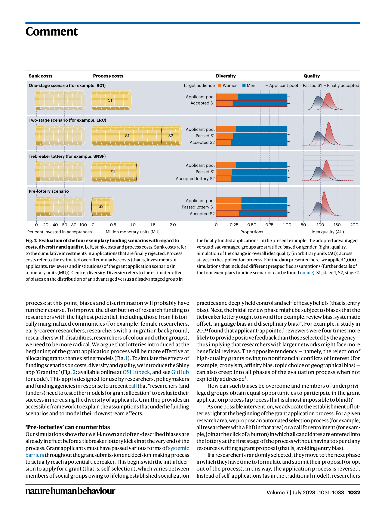

Figure 1
저자: Finn Luebber, Sören Krach, Marina Martinez Mateo, Frieder M. Paulus, Lena Rademacher, Rima-Maria Rahal, Jule Specht | 날짜: 2023 | Journal: Nature Human Behaviour | DOI: 10.1038/s41562-023-01649-y
Figure 1
연구비 배분 과정의 편향을 줄이려면 추첨(lottery)을 심사 마지막 단계가 아닌 맨 처음 단계에 배치해야 한다. 시뮬레이션 결과, 'pre-lottery' 시나리오는 기존 1단계(R01), 2단계(ERC), tiebreaker lottery(SNSF) 방식 대비 매몰 비용(sunk cost)을 대폭 줄이면서도 다양성(diversity)과 연구 품질(quality)을 동시에 개선할 수 있다.

Figure 2
총평: 연구비 배분의 추첨 시점을 처음으로 옮기자는 발상은 신선하고 시의적절하나, 3페이지 Comment 특성상 실증 근거와 구체적 제도 설계가 부족하여 정책 제언으로서의 설득력이 아직 제한적이다.